Figure generation for Invitation to the ECT
This notebook was used to generate the figures for the paper
Elizabeth Munch. An Invitation to the Euler Characteristic Transform. arXiv:2310.10395, 2023. To appear: MAA Monthly, 2024.
[ ]:
import numpy as np
import matplotlib.pyplot as plt
# import teaspoon
plt.rcParams.update({
"text.usetex": True,
# "font.family": "Helvetica",
"font.family": "serif",
"font.size": 8
})
[ ]:
import matplotlib
matplotlib.__version__
'3.8.4'
[ ]:
# Code to set colormaps to deal with the transparency issue
cmap_viridis = matplotlib.cm.viridis
cmap_viridis.set_bad('white',1.)
cmap_binary = matplotlib.cm.tab20b
cmap_binary.set_bad('white',1.)
[ ]:
F = plt.imread('figures/leafbw.tif')
F = F.T
F = F/255.
F_finite = np.copy(F)
F_finite[F==0] = 2000
# G = np.ones_like(F)
# G[F==0] = 1
# print(G.shape)
F[F==0] = np.nan
plt.matshow(F, origin = 'lower',cmap = cmap_binary)
# plt.matshow(G, origin = 'lower')
fig = plt.gcf()
# fig.set_rasterized(True)
fig.set_figwidth(5)
plt.title('Testing')
plt.savefig('figures/test.png', dpi = 300)
plt.savefig('figures/test.eps', facecolor='white', transparent=False,bbox_inches='tight')
plt.savefig('figures/test.pdf')
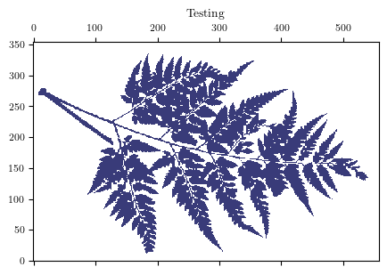
[ ]:
[ ]:
F
array([[nan, nan, nan, ..., nan, nan, nan],
[nan, nan, nan, ..., nan, nan, nan],
[nan, nan, nan, ..., nan, nan, nan],
...,
[nan, nan, nan, ..., nan, nan, nan],
[nan, nan, nan, ..., nan, nan, nan],
[nan, nan, nan, ..., nan, nan, nan]])
[ ]:
def makeFernPic(F, theta, plot = True):
maxRow, maxCol = np.shape(F)
omega = (np.cos(theta), np.sin(theta))
# center origin
Col,Row = np.meshgrid(range(maxCol),range(maxRow))
Col = Col - np.floor(maxCol/2)
Row = Row-np.floor(maxRow/2)
fMask = omega[0]*Col + omega[1]*Row
DT = np.multiply(F,fMask)
return DT
[ ]:
cmap = matplotlib.cm.viridis
cmap.set_bad('white',1.)
plt.matshow(makeFernPic(F,np.pi/2), origin = 'lower', cmap = cmap_viridis)
plt.colorbar(fraction=0.035, pad=0.04)
fig = plt.gcf()
# fig.set_rasterized(True)
fig.set_figwidth(5)
plt.savefig('figures/test.png', dpi = 300)
plt.savefig('figures/test.eps', facecolor='white', transparent=False,bbox_inches='tight')
plt.savefig('figures/test.pdf')
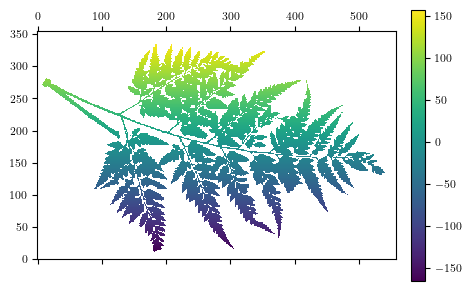
Trying Erik’s stuff
[ ]:
import demeter.euler as euler
import demeter.directions as dirs
import demeter.misc as misc
import time
import tifffile as tf
[ ]:
leaf_file = 'figures/leafbw.tif'
leaf_img = tf.imread(leaf_file)
leaf_img[leaf_img > 0] = 1
fig, ax = plt.subplots(1,2,figsize=(20,6))
ax[0].imshow(leaf_img, cmap='gray');
ax[0].plot([200,200,250,250,200], [280,310,310,280,280], c='red', lw=4);
ax[1].imshow(leaf_img[280:310, 200:250], cmap='gray');
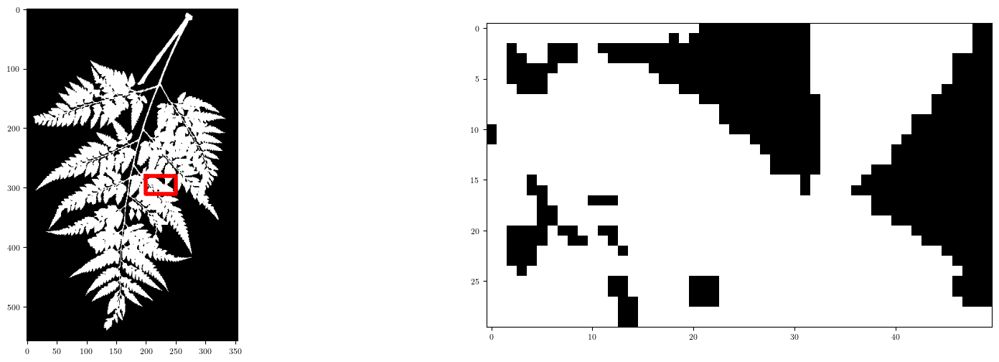
[ ]:
tic = time.perf_counter()
leaf = euler.CubicalComplex(leaf_img).complexify()
toc = time.perf_counter()
print("Complexify in {:.4f} seconds.\n\nCubical complex made of:".format(toc-tic))
leaf.summary();
Complexify in 1.0271 seconds.
Cubical complex made of:
53832 vertices
99196 edges
45167 squares
----
Euler Characteristic: -197
[ ]:
leaf.summary()
53832 vertices
99196 edges
45167 squares
----
Euler Characteristic: -197
0
[ ]:
leaf.cells
[array([[-271.57746322, 89.89517387],
[-271.57746322, 90.89517387],
[-270.57746322, 88.89517387],
...,
[ 259.42253678, -44.10482613],
[ 259.42253678, -43.10482613],
[ 260.42253678, -45.10482613]]),
array([[ 0, 1],
[ 0, 3],
[ 1, 4],
...,
[53828, 53829],
[53828, 53831],
[53829, 53830]]),
array([[ 0, 1, 3, 4],
[ 2, 3, 7, 8],
[ 3, 4, 8, 9],
...,
[53821, 53822, 53826, 53827],
[53825, 53826, 53828, 53829],
[53826, 53827, 53829, 53830]])]
[ ]:
theta = np.pi/4
omega = (np.cos(theta),np.sin(theta))
heights = np.sum(leaf.cells[0]*omega, axis=1)
[ ]:
heights
array([-128.46877882, -127.76167204, -128.46877882, ..., 152.25261331,
152.9597201 , 152.25261331])
Making pictures
[ ]:
theta = 6*np.pi/4
omega = (np.cos(theta), np.sin(theta))
heights = np.sum(leaf.cells[0]*omega, axis=1)
[ ]:
plt.scatter(leaf.cells[0][:,0],leaf.cells[0][:,1],
s=0.1, c=heights, cmap='magma', label='T = {}'.format(32))
plt.colorbar()
<matplotlib.colorbar.Colorbar at 0x73f180e96250>
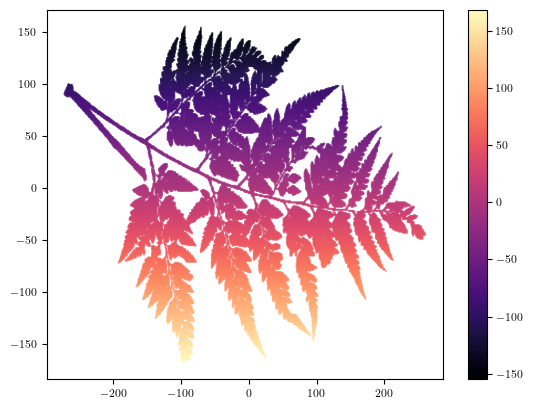
[ ]:
# Figuring out centering
size = np.shape(F)
print(np.floor(size[0]/2))
print(np.floor(size[1]/2))
177.0
279.0
[ ]:
plt.matshow(makeFernPic(F,theta), origin = 'lower', cmap = cmap_viridis, vmin = -150, vmax = 150)
ax = plt.gca()
midx = 279
ax.set_xticks(midx+100*np.arange(-2,3))
ax.set_xticklabels(np.arange(-2,3)*100)
midy = 177
ax.set_yticks(midy+100*np.arange(-2,3))
ax.set_yticklabels(np.arange(-2,3)*100)
plt.colorbar()
# plt.savefig('figures/Fern' + str(int(theta*1000)) + '.png', bbox_inches = 'tight')
<matplotlib.colorbar.Colorbar at 0x73f16b1855d0>
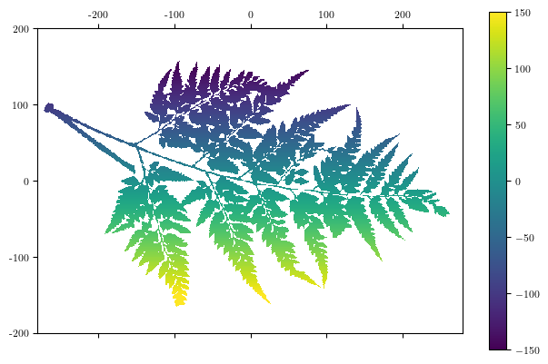
[ ]:
# Version without colorbars
thetaStrs = [r'\pi/4', r'3\pi/4', r'3\pi/2', '7\pi/4']
thetaStrsFile = [r'pi_over_4', r'3pi_over_4', r'3pi_over_2', '7pi_over_4']
thetas = [np.pi/4, 3*np.pi/4, 3*np.pi/2, 7*np.pi/4]
for i, theta in enumerate(thetas):
print(theta)
im = plt.matshow(makeFernPic(F,theta), origin = 'lower', cmap = cmap_viridis, vmin = -200, vmax = 200)
ax = plt.gca()
midx = 279
ax.set_xticks(midx+100*np.arange(-2,3))
ax.set_xticklabels(np.arange(-2,3)*100)
ax.xaxis.set_ticks_position('bottom')
midy = 177
ax.set_yticks(midy+100*np.arange(-2,3))
ax.set_yticklabels(np.arange(-2,3)*100)
# plt.colorbar(fraction=0.035, pad=0.04)
plt.title(r'$f_{\omega}$ for $\omega = ' + thetaStrs[i] + r'$')
fig = plt.gcf()
fig.set_figwidth(1.8)
print(fig.get_size_inches())
height_fig = fig.get_size_inches()[0]
print(height_fig)
plt.savefig('figures/Fern_' + thetaStrsFile[i] + '_nocolorbar.png', bbox_inches = 'tight', dpi = 300)
plt.savefig('figures/Fern_' + thetaStrsFile[i] + '_nocolorbar.eps', bbox_inches = 'tight')
0.7853981633974483
[1.8 4.8]
1.8
2.356194490192345
[1.8 4.8]
1.8
4.71238898038469
[1.8 4.8]
1.8
5.497787143782138
[1.8 4.8]
1.8
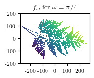
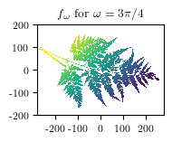
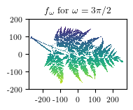
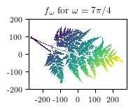
[ ]:
thetaStrs = [r'\pi/4', r'3\pi/4', r'3\pi/2', '7\pi/4']
thetaStrsFile = [r'pi_over_4', r'3pi_over_4', r'3pi_over_2', '7pi_over_4']
thetas = [np.pi/4, 3*np.pi/4, 3*np.pi/2, 7*np.pi/4]
for i, theta in enumerate(thetas):
print(theta)
plt.matshow(makeFernPic(F,theta), origin = 'lower', cmap = cmap_viridis, vmin = -200, vmax = 200)
ax = plt.gca()
midx = 279
ax.set_xticks(midx+100*np.arange(-2,3))
ax.set_xticklabels(np.arange(-2,3)*100)
ax.xaxis.set_ticks_position('bottom')
midy = 177
ax.set_yticks(midy+100*np.arange(-2,3))
ax.set_yticklabels(np.arange(-2,3)*100)
plt.colorbar(fraction=0.03, pad=0.04)
plt.title(r'$f_{\omega}$ for $\omega = ' + thetaStrs[i] + r'$')
fig = plt.gcf()
# fig.set_figwidth(2.4)
print(height_fig)
fig.set_figheight(height_fig)
print(fig.get_size_inches())
plt.savefig('figures/Fern_' + thetaStrsFile[i] + '.png', bbox_inches = 'tight', dpi = 300)
plt.savefig('figures/Fern_' + thetaStrsFile[i] + '.eps', bbox_inches = 'tight')
0.7853981633974483
1.8
[7.54478873 1.8 ]
2.356194490192345
1.8
[7.54478873 1.8 ]
4.71238898038469
1.8
[7.54478873 1.8 ]
5.497787143782138
1.8
[7.54478873 1.8 ]
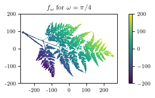
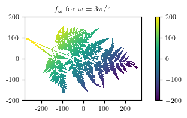
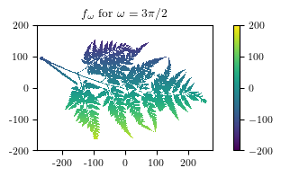
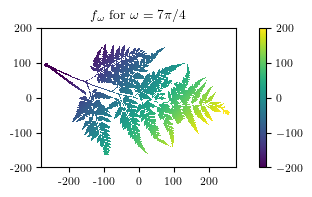
[ ]:
fig,ax = plt.subplots()
plt.colorbar(im,ax=ax)
ax.remove()
fig.set_figwidth(0.8)
plt.savefig('figures/OnlyColorbar.png', bbox_inches = 'tight', dpi = 300)
plt.savefig('figures/OnlyColorbar.eps', bbox_inches = 'tight')
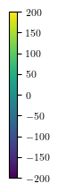
[ ]:
[ ]:
str(int(theta*1000))
'5497'
Thresholded Figure
[ ]:
def makeFernPicThreshold(F, theta, thresh, both = False):
maxRow, maxCol = np.shape(F)
omega = (np.cos(theta), np.sin(theta))
# center origin
Col,Row = np.meshgrid(range(maxCol),range(maxRow))
Col = Col - np.floor(maxCol/2)
Row = Row-np.floor(maxRow/2)
fMask = omega[0]*Col + omega[1]*Row
fMaskBelow = fMask.copy()
fMaskBelow[fMaskBelow <= thresh] = np.nan
fMaskAbove = fMask.copy()
fMaskAbove[fMaskAbove > thresh] = np.nan
DTdown = np.multiply(F,fMaskAbove)
DTup = np.multiply(F,fMaskBelow)
# Why the fork is this backwards!?!?!?!?!
# Must have something to do with meshgrid but i just can't fight it right now
if both:
return DTdown,DTup
else:
return DTdown
[ ]:
theta = 3*np.pi/4
for thresh in [-150,-100,-50,0,50,100,150]:
heights = np.sum(leaf.cells[0]*omega, axis=1)
# Plot colors above theshold
plt.matshow(makeFernPicThreshold(F,theta,thresh),
origin = 'lower',
cmap = cmap_viridis,
vmin = -200, vmax = 200)
ax = plt.gca()
midx = 279
ax.set_xticks(midx+100*np.arange(-2,3))
ax.set_xticklabels(np.arange(-2,3)*100)
ax.xaxis.set_ticks_position('bottom')
ax.tick_params(axis='x', labelrotation=45)
midy = 177
ax.set_yticks(midy+100*np.arange(-2,3))
ax.set_yticklabels(np.arange(-2,3)*100)
plt.title(r'$K_{' + str(thresh) + r'}$')
fig = plt.gcf()
fig.set_figwidth(1.25)
thresh_size_fig = fig.get_size_inches()
print(thresh_size_fig)
# plt.colorbar()
plt.savefig('figures/Fern_3pi_over_4_Thresh'+str(thresh)+'.png', bbox_inches = 'tight',dpi = 300)
plt.savefig('figures/Fern_3pi_over_4_Thresh'+str(thresh)+'.eps', bbox_inches = 'tight')
# plt.clf()
[1.25 4.8 ]
[1.25 4.8 ]
[1.25 4.8 ]
[1.25 4.8 ]
[1.25 4.8 ]
[1.25 4.8 ]
[1.25 4.8 ]
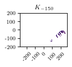
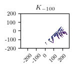
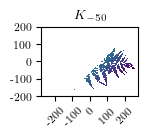
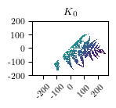
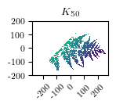
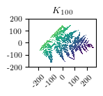
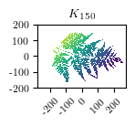
[ ]:
theta = 3*np.pi/4
fig,axes = plt.subplots(1,5,sharey = True, figsize = (6,2))
for i, thresh in enumerate([-150,-50,0,50,150]):
ax = axes[i]
heights = np.sum(leaf.cells[0]*omega, axis=1)
# Plot colors above theshold
ax.matshow(makeFernPicThreshold(F,theta,thresh),
origin = 'lower',
cmap = cmap_viridis,
vmin = -200, vmax = 200)
# midx = 279
# ax.set_xticks(midx+100*np.arange(-2,3))
# ax.set_xticklabels(np.arange(-2,3)*100)
# ax.xaxis.set_ticks_position('bottom')
# ax.tick_params(axis='x', labelrotation=45)
# midy = 177
# ax.set_yticks(midy+100*np.arange(-2,3))
# ax.set_yticklabels(np.arange(-2,3)*100)
ax.set_xticks([])
ax.set_yticks([])
ax.set_title(r'$K_{' + str(thresh) + r'}$')
# fig = plt.gcf()
# fig.set_figwidth(1.25)
# thresh_size_fig = fig.get_size_inches()
# print(thresh_size_fig)
# plt.colorbar()
# plt.savefig('figures/Fern_3pi_over_4_Thresh'+str(thresh)+'.png', bbox_inches = 'tight',dpi = 300)
# plt.savefig('figures/Fern_3pi_over_4_Thresh'+str(thresh)+'.eps', bbox_inches = 'tight')
# plt.clf()
plt.savefig('figures/Fern_3pi_over_4_AllThresh.png', bbox_inches = 'tight',dpi = 300)
plt.savefig('figures/Fern_3pi_over_4_AllThresh.eps', bbox_inches = 'tight',dpi = 300)
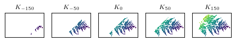
ECC in one direction
[ ]:
theta = 3*np.pi/4
omega = (np.cos(theta), np.sin(theta))
heights = np.sum(leaf.cells[0]*omega, axis=1)
numThresh = 64
threshes= np.linspace(heights.min(), heights.max(), numThresh)
outECC = leaf.ECC(heights, numThresh)
fig = plt.figure()
ax = plt.gca()
positions = [-150, -50, 0, 50, 150]
for pos in positions:
ax.axvline(x=pos, color='grey', linestyle='--')
plt.step(threshes,outECC)
plt.title(r'ECC for $\omega = \frac{3 \pi}{4}$')
plt.xlabel('$a$')
plt.ylabel(r'$\chi(K_a)$')
# ax.set_xticks([-200,-150,-100,-50,0,50,100,150,200])
# midx = 279
# ax.set_xticks(midx+100*np.arange(-2,3))
# ax.set_xticklabels(np.arange(-2,3)*100)
# ax.xaxis.set_ticks_position('bottom')
# ax.tick_params(axis='x', labelrotation=45)
ax.tick_params(axis='x', labelrotation=45)
ax.tick_params(axis='y', labelrotation=45)
fig = plt.gcf()
fig.set_size_inches(5,2)
# fig.set_size_inches(thresh_size_fig)
# print(thresh_size_fig)
# print(fig.get_size_inches())
plt.savefig('figures/Fern_3pi_over_4_ECC.png', bbox_inches = 'tight',dpi=300)
plt.savefig('figures/Fern_3pi_over_4_ECC.eps', bbox_inches = 'tight')
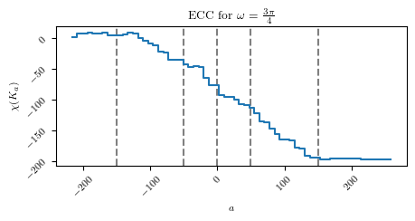
[ ]:
print(outECC[-1])
-197
ECT
[ ]:
# Get all the directions around the circle
numCircleDirs = 32
circledirs = np.linspace(0, 2*np.pi, num=numCircleDirs, endpoint=False)
circledirs
print(circledirs/np.pi)
[0. 0.0625 0.125 0.1875 0.25 0.3125 0.375 0.4375 0.5 0.5625
0.625 0.6875 0.75 0.8125 0.875 0.9375 1. 1.0625 1.125 1.1875
1.25 1.3125 1.375 1.4375 1.5 1.5625 1.625 1.6875 1.75 1.8125
1.875 1.9375]
[ ]:
# Choose number of thresholds for the ECC to stop at
numThresh = 100
[ ]:
ECT_preprocess = {}
overallmin = 0
overallmax = 0
for i, omega in enumerate(circledirs):
omegavec = np.array((np.cos(omega),np.sin(omega)))
# Function values of all the pixels
heights = np.sum(leaf.cells[0]*omegavec, axis=1)
# Thresholds implicitly calculated by Erik's code
threshes= np.linspace(heights.min(), heights.max(), numThresh)
if heights.min()<overallmin:
overallmin = heights.min()
if heights.max()>overallmax:
overallmax= heights.max()
outECC = leaf.ECC(heights, numThresh)
ECT_preprocess[i] = (threshes,outECC)
print(overallmin,overallmax)
-285.68893688291087 285.68893688291087
[ ]:
i = 2
plt.step( ECT_preprocess[i][0], ECT_preprocess[i][1])
[<matplotlib.lines.Line2D at 0x73f16b12de10>]
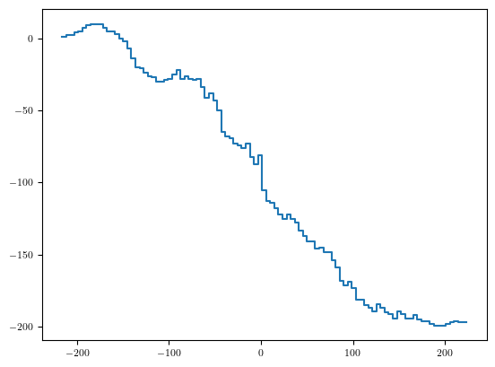
[ ]:
# Making a matrix of size numThreshes x numCircleDirs
# M[i,j] =
# Make meshgrid. The +1 is to draw 2pi on both ends
X,Y = np.meshgrid(range(numCircleDirs+1),np.linspace(-250,250,numThresh))
M = np.ones_like(X)
for i in range(X.shape[0]):
for j in range(X.shape[1]):
omegai = X[i,j]
# Deal with redrawing the 2pi
omegai = np.mod(omegai,numCircleDirs)
omega = i*np.pi/numCircleDirs
a = Y[i,j]
threshes = ECT_preprocess[omegai][0]
# print(threshes)
try:
index = np.where(threshes>=a)[0][0]
except:
index = [-1]
M[i,j] = ECT_preprocess[omegai][1][index]
/tmp/ipykernel_57600/1470381530.py:26: DeprecationWarning: Conversion of an array with ndim > 0 to a scalar is deprecated, and will error in future. Ensure you extract a single element from your array before performing this operation. (Deprecated NumPy 1.25.)
M[i,j] = ECT_preprocess[omegai][1][index]
[ ]:
plt.pcolormesh(X,Y,M, cmap = 'viridis')
plt.colorbar()
ax = plt.gca()
ax.set_xticks(np.arange(0,numCircleDirs+1,4))
labels = [r'$0$',
r'$\frac{\pi}{4}$',
r'$\frac{\pi}{2}$',
r'$\frac{3\pi}{4}$',
r'$\pi$',
r'$\frac{5\pi}{4}$',
r'$\frac{3\pi}{2}$',
r'$\frac{7\pi}{4}$',
r'$2\pi$',
]
ax.set_xticklabels(labels)
plt.xlabel(r'$\omega$')
plt.ylabel(r'$a$')
plt.title(r'ECT of Fern Leaf')
fig = plt.gcf()
fig.set_size_inches(3,2)
plt.savefig('figures/Fern_ECT.png', bbox_inches = 'tight',dpi=900)
plt.savefig('figures/Fern_ECT.eps', bbox_inches = 'tight')
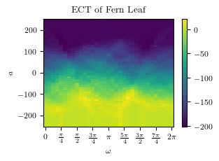
[ ]:
M[0,:]
array([ 1, 1, 1, 1, 6, 1, 1, 1, 1, 2, 1, 4, 1, 1, 3, 3, 2,
1, 2, 10, 3, 3, 1, 1, 3, 3, 1, 2, 1, 1, 1, 1, 1])
[ ]:
bigvals = np.where(M[0,:] >3)[0]
circledirs[bigvals]/np.pi*16
array([ 4., 11., 19.])
Let’s draw a cylinder!
[ ]:
import matplotlib
from mpl_toolkits.mplot3d import Axes3D
import numpy as np
import matplotlib.pyplot as plt
# pip install ipympl
# %matplotlib widget
[ ]:
grid = M[:,:-1]
print(grid.shape)
(100, 32)
[ ]:
color_dimension = grid # change to desired fourth dimension
minn, maxx = color_dimension.min(), color_dimension.max()
norm = matplotlib.colors.Normalize(minn, maxx)
m = plt.cm.ScalarMappable(norm=norm, cmap='viridis')
m.set_array([])
fcolors = m.to_rgba(color_dimension)
print(fcolors.shape)
(100, 32, 4)
[ ]:
theta = np.linspace(0, 2 * np.pi, 24)
print(theta)
# theta = circledirs[:-1]
# print(theta, theta.shape)
[0. 0.27318197 0.54636394 0.81954591 1.09272788 1.36590985
1.63909182 1.91227379 2.18545576 2.45863773 2.7318197 3.00500167
3.27818364 3.55136561 3.82454758 4.09772955 4.37091152 4.64409349
4.91727546 5.19045743 5.4636394 5.73682137 6.01000334 6.28318531]
[ ]:
"""
equation for a circle
x = h + r cosθ
y = k + r sinθ
where h and k are the co-ordinates of the center
0 <= θ <= 360
"""
fig = plt.figure(figsize=(4,3))
ax = fig.add_subplot(111, projection='3d')
# theta = np.linspace(0, 2 * np.pi, 24)
radius = 1
x = np.linspace(0, numThresh, numThresh)
# theta = circledirs
theta = np.linspace(0, 2 * np.pi, 32)
thetas, xs = np.meshgrid(theta, x)
y = radius * np.cos(thetas)
z = radius * np.sin(thetas)
#ax.plot_surface(xs, y, z, color='orange')
#ax.plot_surface(xs, y, z, facecolors=fcolors)
surf = ax.plot_surface(xs, y, z, facecolors = fcolors,linewidth = 0.1)
surf.set_edgecolor('grey')
ax.set_axis_off()
plt.savefig('figures/fern_ECT_cylinder.png', bbox_inches = 'tight',dpi = 900)
plt.savefig('figures/fern_ECT_cylinder.eps', bbox_inches = 'tight')
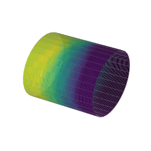
[ ]:
omegai = 5
omega = i*np.pi/numCircleDirs
a = 17
threshes = ECT_preprocess[omegai][0]
print(threshes)
index = np.where(threshes>=a)[0][0]
print(index)
print(threshes[index])
ECT_preprocess[omegai][1][index]
[-193.98518858 -190.40235323 -186.81951788 -183.23668253 -179.65384718
-176.07101183 -172.48817648 -168.90534113 -165.32250578 -161.73967042
-158.15683507 -154.57399972 -150.99116437 -147.40832902 -143.82549367
-140.24265832 -136.65982297 -133.07698762 -129.49415227 -125.91131692
-122.32848157 -118.74564621 -115.16281086 -111.57997551 -107.99714016
-104.41430481 -100.83146946 -97.24863411 -93.66579876 -90.08296341
-86.50012806 -82.91729271 -79.33445735 -75.751622 -72.16878665
-68.5859513 -65.00311595 -61.4202806 -57.83744525 -54.2546099
-50.67177455 -47.0889392 -43.50610385 -39.92326849 -36.34043314
-32.75759779 -29.17476244 -25.59192709 -22.00909174 -18.42625639
-14.84342104 -11.26058569 -7.67775034 -4.09491499 -0.51207963
3.07075572 6.65359107 10.23642642 13.81926177 17.40209712
20.98493247 24.56776782 28.15060317 31.73343852 35.31627387
38.89910923 42.48194458 46.06477993 49.64761528 53.23045063
56.81328598 60.39612133 63.97895668 67.56179203 71.14462738
74.72746273 78.31029808 81.89313344 85.47596879 89.05880414
92.64163949 96.22447484 99.80731019 103.39014554 106.97298089
110.55581624 114.13865159 117.72148694 121.3043223 124.88715765
128.469993 132.05282835 135.6356637 139.21849905 142.8013344
146.38416975 149.9670051 153.54984045 157.1326758 160.71551116]
59
17.402097119801482
-83
Erik’s version
[ ]:
# t = 32
# tic = time.perf_counter()
# ect = leaf.ECT(circle_dirs, T=t)
# toc = time.perf_counter()
# print("Complex with {} vertices\n".format(len(leaf.cells[0])))
# print("ECT with {} directions in {:.4f} seconds.\n{:.4f}s per direction".format(len(circle_dirs), toc-tic, (toc-tic)/len(circle_dirs)))
# plt.figure(figsize=(15,2))
# plt.plot(ect);
# plt.title('ECT for {} directions and {} thresholds each'.format(len(circle_dirs),t), fontsize=24);
SECT
[ ]:
# THe original ECT
plt.pcolormesh(X,Y,M, cmap = 'viridis')
plt.colorbar()
ax = plt.gca()
ax.set_xticks(np.arange(0,numCircleDirs+1,4))
labels = [r'$0$',
r'$\frac{\pi}{4}$',
r'$\frac{\pi}{2}$',
r'$\frac{3\pi}{4}$',
r'$\pi$',
r'$\frac{5\pi}{4}$',
r'$\frac{3\pi}{2}$',
r'$\frac{7\pi}{4}$',
r'$2\pi$',
]
ax.set_xticklabels(labels)
fig = plt.gcf()
fig.set_size_inches(3,2)
plt.xlabel(r'$\omega$')
plt.ylabel(r'$a$')
plt.title(r'ECT of Fern Leaf')
Text(0.5, 1.0, 'ECT of Fern Leaf')

[ ]:
# Following Crawford2019 for the moment. Is this different in the Meng22 version?
print(M.shape)
# Averages for a fixed direction
AvgOverOmega = np.average(M,axis = 0)
print(AvgOverOmega)
# Mean centered
Mcentered = M-AvgOverOmega
(100, 33)
[-100.72 -99.01 -96.97 -95. -93.24 -92.33 -91.34 -90.83 -90.69
-89.07 -87.98 -87.07 -87.2 -87.64 -88.43 -89.47 -90.97 -90.94
-91.8 -91.22 -93. -94.51 -96.85 -98.61 -99.98 -100.05 -100.44
-100.47 -101.04 -101.12 -101.03 -100.91 -100.72]
[ ]:
plt.pcolormesh(X,Y,Mcentered, cmap = 'viridis')
plt.colorbar()
ax = plt.gca()
ax.set_xticks(np.arange(0,numCircleDirs+1,4))
labels = [r'$0$',
r'$\frac{\pi}{4}$',
r'$\frac{\pi}{2}$',
r'$\frac{3\pi}{4}$',
r'$\pi$',
r'$\frac{5\pi}{4}$',
r'$\frac{3\pi}{2}$',
r'$\frac{7\pi}{4}$',
r'$2\pi$',
]
ax.set_xticklabels(labels)
plt.xlabel(r'$\omega$')
plt.ylabel(r'$a$')
plt.title(r'ECT of Fern Leaf with value centered')
fig = plt.gcf()
fig.set_size_inches(3,2)
plt.savefig('figures/Fern-ECT-centered.png', bbox_inches = 'tight')
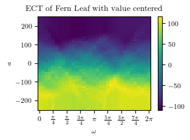
[ ]:
Mcentered.sum(axis = 0)
array([-1.09992015e-11, 1.23066002e-11, -1.07718279e-11, 0.00000000e+00,
-1.27613475e-11, -5.48538992e-12, 6.96331881e-12, -5.03064257e-12,
4.71800377e-12, 7.78754838e-12, 1.33582034e-12, 7.78754838e-12,
-9.12336873e-12, -5.42854650e-12, -7.56017471e-12, -1.09992015e-11,
-1.09992015e-11, 4.71800377e-12, 9.35074240e-12, -1.09992015e-11,
0.00000000e+00, 1.25339739e-11, -6.56541488e-12, 5.54223334e-12,
1.33582034e-12, 9.40758582e-12, 4.66116035e-12, -1.09992015e-11,
-2.87059265e-12, -8.29913915e-12, 1.07718279e-11, -7.53175300e-12,
-1.09992015e-11])
[ ]:
a = np.array([[1,2,3], [4,5,6]])
print(a)
np.cumsum(a,axis = 0)
[[1 2 3]
[4 5 6]]
array([[1, 2, 3],
[5, 7, 9]])
[ ]:
Mint = np.cumsum(Mcentered,axis = 0)
[ ]:
plt.pcolormesh(X,Y,Mint, cmap = 'viridis')
plt.colorbar()
ax = plt.gca()
ax.set_xticks(np.arange(0,numCircleDirs+1,4))
labels = [r'$0$',
r'$\frac{\pi}{4}$',
r'$\frac{\pi}{2}$',
r'$\frac{3\pi}{4}$',
r'$\pi$',
r'$\frac{5\pi}{4}$',
r'$\frac{3\pi}{2}$',
r'$\frac{7\pi}{4}$',
r'$2\pi$',
]
ax.set_xticklabels(labels)
fig = plt.gcf()
fig.set_size_inches(3,2)
plt.xlabel(r'$\omega$')
plt.ylabel(r'$t$')
plt.title(r'SECT of Fern Leaf')
plt.savefig('figures/Fern-SECT.png',bbox_inches = 'tight',dpi=900)
plt.savefig('figures/Fern-SECT.eps',bbox_inches = 'tight')
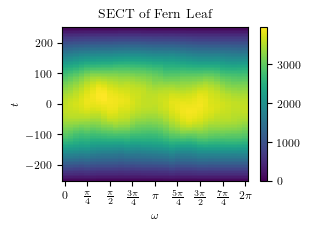
[ ]: